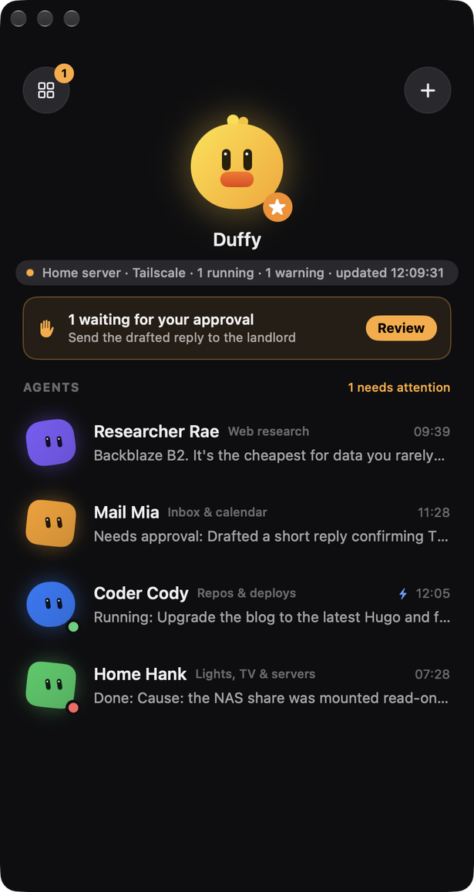
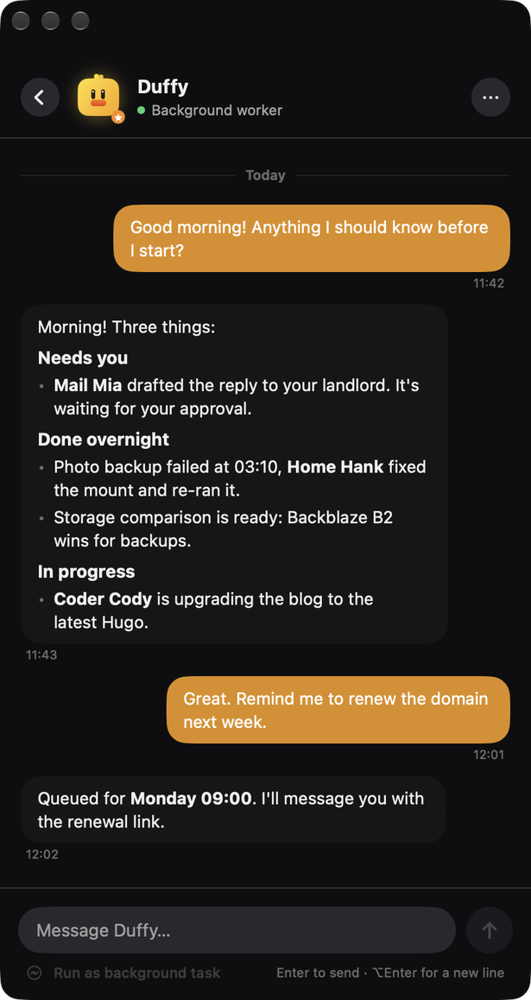
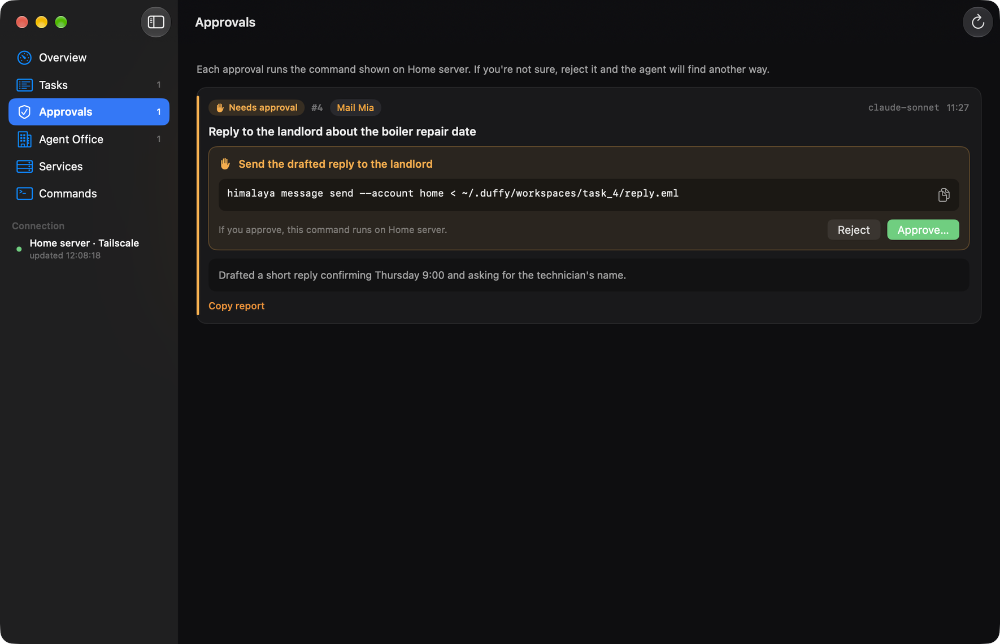

Autonomous for routine work. Human-in-the-loop for the rest.
Most agent tools either answer while you watch, or run unattended and hope for the best. Duffy sits in between.
| Chat with an AI | Agent running unattended | Duffy | |
|---|---|---|---|
| Works while you're away | ✗ | ✓ | ✓ |
| Queue, history and logs that survive restarts | ✗ | sometimes | ✓ |
| Asks before risky actions, shows the exact command | n/a | ✗ | ✓ |
| Switches model when one hits its quota | ✗ | rarely | ✓ |
| Uses the CLI and subscription you already have | ✗ | varies | ✓ |
| Runs on your own machine, no account | ✗ | varies | ✓ |
Everything you need, nothing you don't
One Python file, standard library only. Happy on an old laptop or a small home server that never sleeps.
Task queue
SQLite queue with a full log per task. Survives restarts and reboots.
Approval gate
The agent ends risky answers with [APPROVAL_REQUIRED: … | CMD: …]. Nothing runs until you approve.
Model fallback
List your models; quota and rate-limit answers move Duffy to the next one.
Any agent CLI
Claude Code, Antigravity, Ollama, Gemini CLI or your own script. If it prints an answer, it works.
Chat agents
Personas you can talk to, each with its own prompt, all through the same queue.
Notifications
Any webhook: WhatsApp or Telegram bridges tell you when a task is done or needs you.
Office panel
Approvals, health checks, launchd services and log tails for a small fleet of agents.
macOS menu bar app
Native SwiftUI app for chatting, queuing and approving without a browser tab.
A native macOS app
Your agents in the menu bar: last results, live status, and a badge when something needs your decision.



Quick start
Python 3.9+ and an agent CLI. No pip install, no account.
# worker + dashboard on http://127.0.0.1:8899 git clone https://github.com/benfirad/daak-duffy.git && cd daak-duffy python3 duffy.py daemon # from another terminal python3 duffy.py add "Summarise yesterday's server logs and list anything unusual" # optional: the macOS menu bar app cd macos && ./build.command
Point it at your agent with agent_command in ~/.duffy/config.json, for example
["claude", "-p", "{prompt}"] or ["ollama", "run", "{model}", "{prompt}"].
All settings →
Safe by default
Loopback only
The dashboard listens on 127.0.0.1 until you add an address. Use a VPN such as Tailscale to reach it from your phone.
Nothing gated runs by itself
A task waiting for approval stays parked. Approving a task that never asked is refused.
You see the exact command
The app and dashboard show the command text that will run, in the task's workspace, with a timeout.
FAQ
Which models and tools does it work with?
Anything you can call from a shell: Claude Code (claude -p), Antigravity (agy), Ollama, llama.cpp, Gemini CLI, Codex CLI or a script of your own.
Does it need an API key or a cloud account?
No. Duffy only talks to your agent CLI and, if you set one, your notification webhook.
Can I run it on a Raspberry Pi or Linux server?
Yes. The worker and dashboard are plain Python 3.9+. Only the menu bar app and launchd helpers are macOS-specific.
Is it free?
Yes, MIT licensed. You only pay for whatever model or subscription your agent CLI uses.